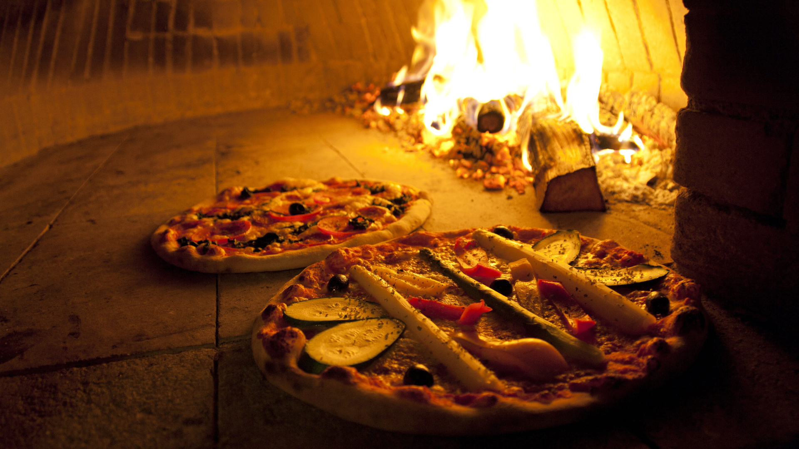

Nossa jornada culinária
O(A) Retro pizza foi fundado(a) por amantes da culinária: familia de imigrantes Italianos que sempre gostou de comer, beber, imaginar e criar boa comida juntos. Nosso passatempo rapidamente nos levou a abrir esse(a) Pizzaria, onde pessoas de toda a região de São bernardo pudessem se encontrar para desfrutar de nossos pratos especiais e de uma atmosfera confortável.
